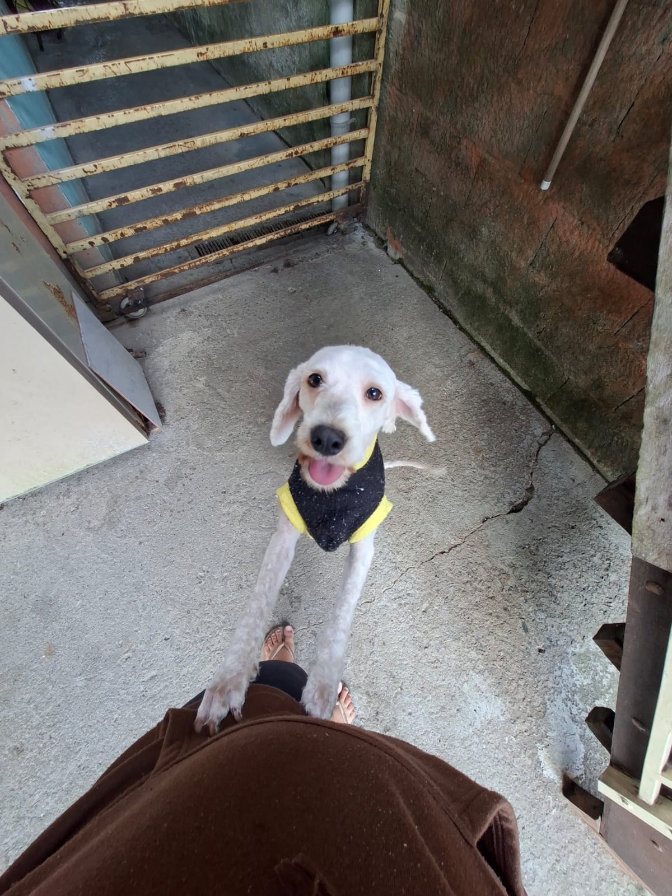
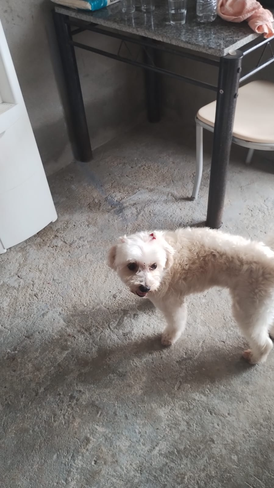
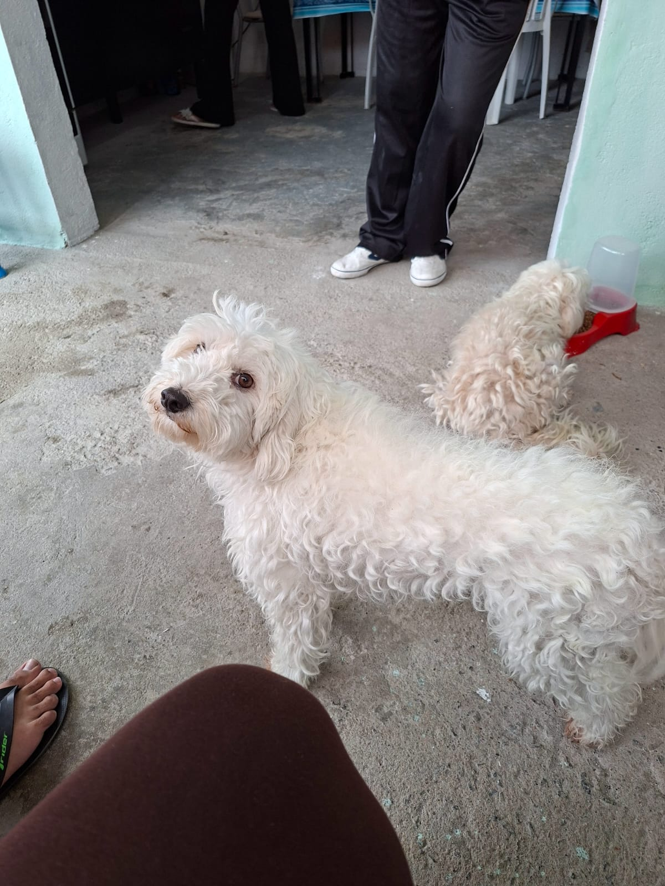
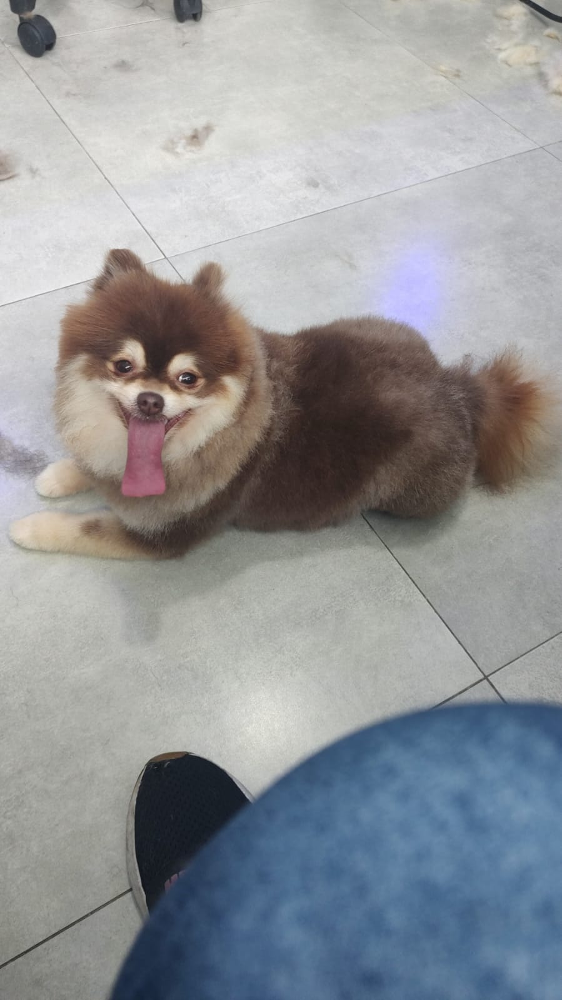
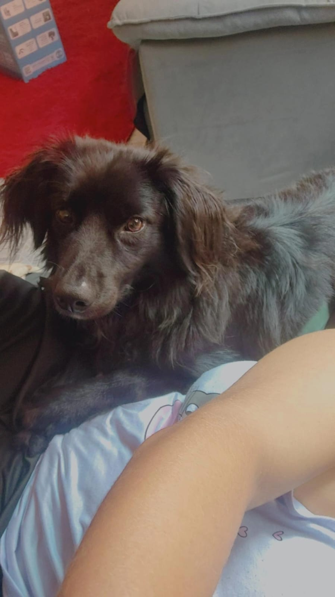

Gordão

Idade: 2 anos
Porte: Médio
Sexo: Macho
Thor é um cão brincalhão, carinhoso e muito companheiro. Gosta de correr e receber atenção.
Status: Disponível para adoção
Resgatando vidas, transformando histórias e encontrando novos lares.
Somos uma ONG dedicada ao resgate, cuidado e proteção de cães que foram abandonados, sofreram maus-tratos ou estavam em situação de vulnerabilidade.
Nosso objetivo é oferecer aos animais uma segunda chance, proporcionando cuidados, carinho e segurança até que encontrem uma família responsável e amorosa.

Idade: 2 anos
Porte: Médio
Sexo: Macho
Thor é um cão brincalhão, carinhoso e muito companheiro. Gosta de correr e receber atenção.
Status: Disponível para adoção

Idade: 1 ano
Porte: Pequeno
Sexo: Fêmea
Luna é dócil, tranquila e muito carinhosa. É uma ótima companhia para famílias.
Status: Disponível para adoção

Idade: 3 anos
Porte: Grande
Sexo: Macho
Max é um cão protetor, obediente e muito leal. Adora passeios e atividades ao ar livre.
Status: Disponível para adoção

Idade: 2 anos
Porte: Pequeno
Sexo: Fêmea
Mel é muito carinhosa e tranquila. Se adapta facilmente a novos ambientes.
Status: Disponível para adoção

Idade: 1,5 anos
Porte: Médio
Sexo: Macho
Bob é amigável, brincalhão e gosta muito de pessoas. Está procurando uma família para chamar de sua.
Status: Disponível para adoção
A Amor de Quatro Patas é uma organização dedicada ao resgate e proteção de cães em situação de abandono e vulnerabilidade.
Trabalhamos para oferecer aos animais alimentação, cuidados, segurança e muito carinho enquanto buscamos famílias responsáveis para adotá-los.
Resgatar animais em situação de vulnerabilidade e proporcionar uma vida digna e cheia de carinho.
Construir uma sociedade onde todos os animais tenham acesso a um lar seguro, responsável e amoroso.
Encontrar famílias responsáveis para os cães resgatados, promovendo adoções conscientes e responsáveis.
150+ cães resgatados
120+ cães adotados
30 cães aguardando adoção
80+ famílias ajudadas
Existem várias formas de ajudar a Amor de Quatro Patas e contribuir para que mais animais sejam resgatados.
Preencha nosso formulário de adoção e demonstre seu interesse em oferecer um novo lar para um dos nossos animais.
Preencher formulário de adoção